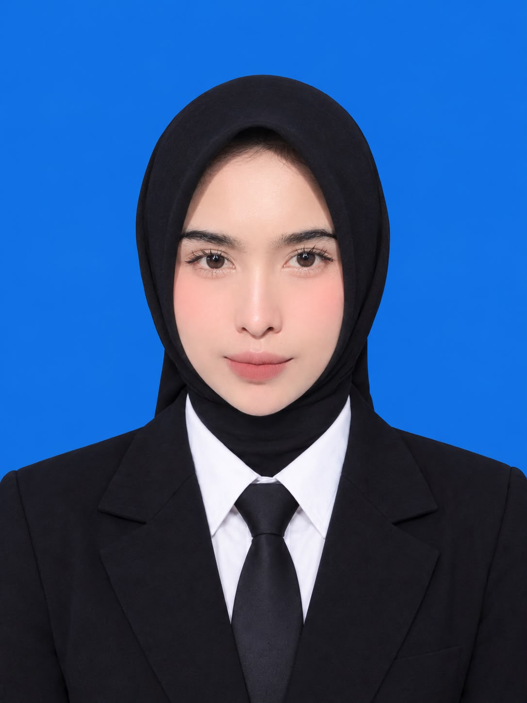

SISWA SMK • CALON TENAGA KERJA INDUSTRI
Teknik Komputer dan Jaringan
Saya adalah siswa SMK kelas XII jurusan Teknik Komputer dan Jaringan. Saya memiliki sifat disiplin, bertanggung jawab, tepat waktu dan mampu bekerja sama.
SDN Dewisari II (2015-2021)
SMPN Islam Al-Furqon (2021-2024)
SMKN 1 Rengasdengklok (2024-2027)
Puskesmas Rengasdengklok (2025-2026)
Hobi: Bermain badminton
Ekstrakurikuler: Seni Tari
Pelatihan: Program Paham AI